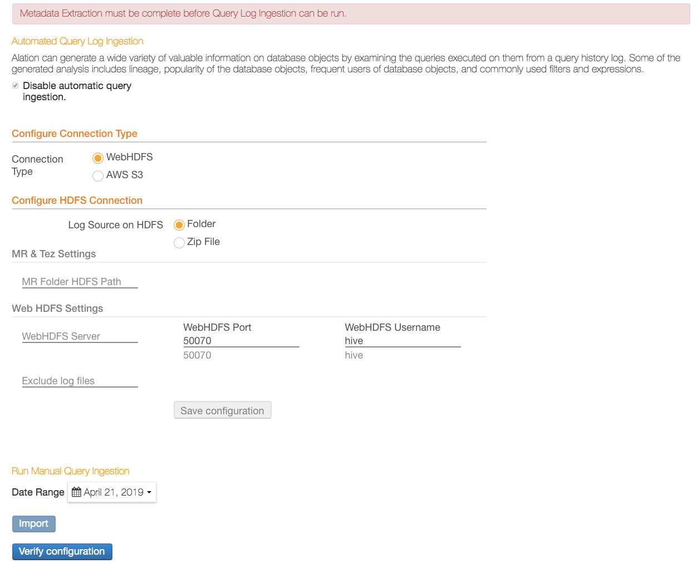

Hive Data Source Settings¶
You can change the settings for your Hive data source on the Settings page. You must be the Data Source Admin of this data source to be able to open and edit the settings.
To open the Settings page:
Click More on the top right of the data source page and in the menu that opens, click Settings:
{kind=link}
General Settings¶
The general connection parameters are available on the General Settings tab. They include:
parameters common to all data sources in Alation;
settings specific to the current database type. Some of the parameters (for example, database connection parameters) will inherit the values you have entered in the Add Data Source wizard, while others can only be specified here.
Hive-specific parameters¶
Parameters |
Notes |
|---|---|
Hive and Hadoop Versions |
Available from version V R5 (5.9.x) for configuration-based Hive |
Configurations Upload |
Available from version V R5 (5.9.x) for configuration-based Hive |
Metastore Network Connection |
Metastore URI (default Hive) |
Kerberos Settings > Metastore Principal |
Required if using Kerberos (default Hive) |
Hive Knox URI |
Knox URI Available from version V R5 (5.9.x) for configuration-based Hive |
User Impersonation |
User impersonation enables Hive to submit jobs as a particular user. When enabled for a Hive data source in Alation, users will automatically connect to the data source with the service account. Queries will be run by the individual Alation user. |
Using Data Uploader¶
The Data Uploader functionality uses the WebHDFS parameters from the Settings > Query Log Ingestion tab. Even when using configuration-based Hive, you will need to provide the parameters in the QLI > WebHDFS Settings section if you want to use the Data Uploader.
Configuring Query Log Ingestion (QLI)¶
QLI parameters are found on the Settings page > Query Log Ingestion.
Hive has several specific parameters required for QLI to run successfully. You always have to fill in the parameters on the QLI tab if using default Hive.
If you are using configuration-based Hive, all the information required for QLI will be in the uploaded configuration files. However, you will still need to supply information on the Query Log Ingestion tab if:
You are planning to use the data uploader functionality (fill in the WebHDSF Settings section).
In release V R5 (5.9.x), you are using Hive with Tez. This does not apply to configuration-based Hive in release V R6 as in this release QLI over Tez uses the uploaded configurations.
Note
For details on Hive frameworks refer to Hive Data Sources.
QLI configuration depends on the connection type you are using:
Under Configure Connection Type, select the type of connection you are using. The input fields for QLI parameters will change depending on the selected option:
WebHDFS
Note
HttpFS connection is supported. You can use the WebHDFS fields to provide the HttpFS connection parameters.
AWS S3
If you are connecting using WebHDFS, provide the following parameters under Configure HDFS Connection:
Log Source on HDFS
Folder — Select this option if the query log files are in a directory.
Zip File — Select this option if the query log files are in a Zip file.
For either log source option, provide the required information:
MR & Tez Settings
MR Folder HDFS Path
WebHDFS Settings
WebHDFS Server
WebHDFS Port
WebHDFS Username
Exclude log files
Note
If using HttpFS, specify the values for your HttpFS server in the fields for the WebHDFS connection. The HttpFS port is usually 14000.
Click Save to save the data you entered.
WebHDFS Log Source: Folder
If you are connecting using Amazon S3, provide the required parameters under Configure AWS S3 Connection. Note that Hive on EMR differs from other Hive configurations in that the query logs are typically captured on S3. Hence, for Hive EMR, you will need to configure this S3 connection for QLI. Specify the parameters listed below. If the values have already been provided during the initial setup of the data source, make sure they are correct:
MR & Tez Settings
MR Folder AWS S3 Path
Tez Folder AWS S3 Path
Apache Spark Settings
Spark Log Folder AWS S3 Path
Spark Log File Name Prefix
Number of Log files in directory
Log4j Time Format
Log4j Conversion Pattern
AWS S3 Settings
AWS Access Key ID
AWS Access Key Secret
AWS Region - Region name should match as listed in AWS API Gateway Table. If the region is not specified, it will assume the value of
us-east-1.Exclude log files
Note
For Amazon S3, the log path format is
/bucketname/path/to/logdirectory/or/bucketname/path/to/logfile.gzip.EMR archives the query logs and stores them in S3. Alation assumes that the files are archived. For ephemeral (transient) clusters, it is recommended to specify the master log path. Alation will traverse the tree with the master log path as root and find the logs.
Example:
If the actual log paths are
/path/to/log/file1and/path/to/log/file2, you can specify the master log path as:/path/.Click Save to save the data you entered.
Click Verify Configuration to test your configuration.
{kind=link}
Diagnosing WebHDFS Setup¶
Before launching QLI, it is worth checking that everything was set up correctly.
To verify the configuration:
Connect to the Alation server and try to list the contents of the logs directory with a curl command.
In the Alation user interface, on the Query Log Ingestion page, confirm that the WebHDFS server URL uses HTTPS. For example,
https://WEBHDFS_HOSTNAME.
Plain Hive Instance with No Configuration¶
SSL for Hive connections is supported. If using SSL, in the tests below, substitute http for https.
For example, on a Mac:
curl -L "http://<server>:50070/webhdfs/v1/<directory>?user.name=<serviceaccount>&op=LISTSTATUS"
Kerberized Hive¶
KINIT as the service account.
Without Keytab:
kinit HIVE_SERVICE_PRINCIPALWith Keytab:
kinit -kt /path/to/keytab HIVE_SERVICE_PRINCIPAL
Run the slightly modified curl command:
curl -L --negotiate -u :"http://<web_hdfs_hostname>:50070/webhdfs/v1/<directory>?user.name=<serviceaccount>&op=LISTSTATUS"
Additionally, you can try downloading one of the files. For example:
curl -L "http://<server>:50070/webhdfs/v1/<path_to_file>?user.name=<serviceaccount>&op=OPEN"